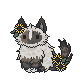

Gene Testing Guide
Overview
Every cat has a hidden gene code.This gene code holds information on a cat, between how it looks, what growth pattern it has, and what genes it carries but does not show, and can pass onto offspring.
A cat's gene code can be revealed by using a Family Tree specialty item on the cat. Using a Family Tree on every cat in a village quickly grows expensive, though, which is where gene testing comes into play.
Using the Beans Sandbox, you can input two cats' IDs and preview what their potential offspring would look like.
With the right combination of cats with known gene strings, we can deduce most of a cat's gene string without spending a single Family Tree.
The Gene String Explained
An example of a cat's gene string looks like:[C] [NN] [SS] [BBFF4] [YYTS] [YY3C] [AA] [RR]
Each bracket [] is one category. The pattern always has the following categories, with different contents depending on the cat. For the previous example, the categories are:- [C] - Species
- [NN] - Wind
- [SS] - Fur Length
- [BBFF4] - Colors
- [YYTS] - Pattern
- [YY3C] - White Markings
- [AA] - Growth
- [RR] - Accent Color
Others have chromosome subcategories, where dominant and recessive genes pair together and display depending on the combination, like the wind alleles [NN].
In some of the more complicated subcategories, there are multiple chromosomal subcategories, like in the colors category [BBFF4], where you could separate it further into [(BB)(FF)(4)]
*All genes listed are dominant unless they specify that they are recessive
*For South wind cats, only the second color gene is displayed on the cat
*For Trade wind cats, if the two color genes are the same ([OO] or [BB]), the cat is a Watercolor coat. If the color genes are different ([OB] or [BO]), the cat is a Tortoiseshell coat
*For Null wind cats, all color information is disregarded, and the coat color is replaced with the Snow color.
*White Level 10 makes Albino cats, covering the whole cat in white. Albinos have different eye colors from regular cats, and the color depends on their white type
*Growth genes cannot be gene tested through the Beans Sandbox. There are ways to test cats for their Growth gene, but sometimes you can't know without actually breeding the cat or revealing its genes.
[Species]
- C - Not-Cat
- M - Mercat
[Wind]
- N - North
- S - South
- O - Null (recessive)
[Fur Length]
- S - Shorthair
- L - Longhair (recessive)
[Colors]
(Color Group)
- O - Orange Group
- B - Black Group
(Color Diluteness)
- F - Full
- D - Dilute (recessive)
(Color Density)
- 1-4 Color Density
*For South wind cats, only the second color gene is displayed on the cat
*For Trade wind cats, if the two color genes are the same ([OO] or [BB]), the cat is a Watercolor coat. If the color genes are different ([OB] or [BO]), the cat is a Tortoiseshell coat
*For Null wind cats, all color information is disregarded, and the coat color is replaced with the Snow color.
For the sake of simplicity, all cats here are assumed to be north wind
The ? allele is a placeholder to indicate that we don't know or need to know the allele- any valid allele can apply there
The ? allele is a placeholder to indicate that we don't know or need to know the allele- any valid allele can apply there
- [B?F?4] - Black
- [B?F?3] - Chocolate
- [B?F?2] - Brown
- [B?F?1] - Tan
- [B?DD4] - Charcoal
- [B?DD3] - Grey
- [B?DD2] - Smoke
- [B?DD1] - Silver
- [O?F?4] - Red
- [O?F?3] - Ginger
- [O?F?2] - Orange
- [O?F?1] - Apricot
- [O?DD4] - Buff
- [O?DD3] - Cream
- [O?DD2] - Almond
- [O?DD1] - Beige
[Pattern]
(Pattern Visibility)
- Y - Yes, Has Pattern
- N - No, Does Not Have Pattern (recessive)
(Pattern Genes)
- T - Stripe Gene
- S - Spot Gene
- M - Marble Gene
- P - Pointed Gene
- [TT] - Stripe + Stripe = Mackerel Pattern
- [TM] or [MT] - Stripe + Marble = Classic Pattern
- [TS] or [ST] - Stripe + Spot = Broken Pattern
- [TP] or [PT] - Stripe + Point = Lynxpoint Pattern
- [MM] - Marble + Marble = Clouded Pattern
- [MS] or [SM] - Marble + Spot = Rosette Pattern
- [MP] or [PM] - Marble + Point = Cloudpoint Pattern
- [SS] - Spot + Spot = Spotted Pattern
- [SP] or [PS] - Spot + Point = Mink Pattern
- [PP] - Point + Point = Colorpoint Pattern
[White Markings]
(White Visibility)
- Y - Yes, Has White Markings
- N - No, Does Not Have White Markings (recessive)
(White Level)
- 0-10 White Level
(White Type)
- C - Classic
- P - Piebald
- L - Left
- R - Right
- I - Inverse
*White Level 10 makes Albino cats, covering the whole cat in white. Albinos have different eye colors from regular cats, and the color depends on their white type
- [C1] - Locket
- [C2] - Locket & Toes
- [C3] - Bib & Boots
- [C4] - Bib, Boots, & Belly
- [C5] - Classic Bicolor
- [C6] - Piebald
- [C7] - Spotted Piebald
- [C8] - Freckled Piebald
- [C9] - Van
- [C10] - Albino (red eyes)
- [P1] - Nose
- [P2] - Nose & Toes
- [P3] - Nose, Bib & Boots
- [P4] - Bib, Ears, & Belly
- [P5] - True Piebald
- [P6] - Scattered Piebald
- [P7] - Painted Spots
- [P8] - Confetti
- [P9] - Speckled Van
- [P10] - Albino (purple eyes)
- [L1] - Toes
- [L2] - Tie & Toes
- [L3] - Tie, Toes & Chin
- [L4] - Chin, Boots, & Belly
- [L5] - Left Bicolor
- [L6] - Left Piebald
- [L7] - Left Patches
- [L8] - Left Spots
- [L9] - Left Van
- [L10] - Albino (blue eyes)
- [R1] - Tail Tip
- [R2] - Tail Tip & Toes
- [R3] - Tail Tip, Toes, & Tie
- [R4] - Tail, Boots, & Belly
- [R5] - Right Bicolor
- [R6] - Right Piebald
- [R7] - Right Patches
- [R8] - Right Spots
- [R9] - Right Van
- [R10] - Albino (green eyes)
- [I1] - Ear Tips
- [I2] - Ear & Tail Tips
- [I3] - Ears, Tail, & Toes
- [I4] - Snowspots
- [I5] - Snowmelt
- [I6] - Ghost
- [I7] - Owl Mantle
- [I8] - Heart Mantle
- [I9] - Heart
- [I10] - Albino (gold eyes)
[Growth Pattern]
- A - Fastest
- B - Moderate
- C - Slowest
*Growth genes cannot be gene tested through the Beans Sandbox. There are ways to test cats for their Growth gene, but sometimes you can't know without actually breeding the cat or revealing its genes.
- [AA] Very Early
- [AB] Early
- [AC] Decreasing
- [BA] Arch
- [BB] Steady
- [BC] Dip
- [CA] Very Late
- [CB] Late
- [CC] Increasing
[Accent Color]
- R - Red
- B - Blue
- Y - Yellow
- L - Black
- [RR] Red + Red = Ruby
- [RB] Red + Blue = Violet
- [RY] Red + Yellow = Amber
- [RL] Red + Black = Pink
- [BB] Blue + Blue = Blue
- [BY] Blue + Yellow = Green
- [BL] Blue + Black = Indigo
- [YY] Yellow + Yellow = Gold
- [YL] Yellow + Black = Teal
- [LL] Black + Black = Black
When dealing with dominant and recessive genes, dominant genes will always dominate the result. For example, if a cat had [SO] for its wind genes, the cat would be a South cat, as the dominant S (South) takes priority over the recessive O (Null).
In order for a recessive gene to display on a cat, the cat needs to only have copies of the recessive gene. For wind genes, for example, the cat needs to have [OO] for its wind to be Null. Any N (North) or S (South) would take over if it was present.
In most cases, the order of the genes does not matter. Main exceptions of this rule are Color Group allele order in north and south cats, and Growth allele order.
What the Not-Cataloguer does for you
When you paste a cat's page into the Not-Cataloguer, it catalogues all publicly available data on your cat, including its appearance information.The Not-Cataloguer then will then give you an incomplete gene code based on what information was publicly available.
How does it do that? You could do it too! Let's explain how to do it manually so every step of geneing cats is transparent
We'll use an example cat for this practice. Here's Sunny's profile:

Sunny
Sunny
Basic Data:
Birthday:
Summer 37, Year 7
Age:
Adult (2 Years)
Wind:
Trade
Pronouns:
she/her
Aspect:
Undiscovered
Origin:
Migrated from Earth
ID Code:
[cat=416273]
Appearance:
Species:
Not-cat
Size:
10 lbs. / 4.54 kg
Fur:
Longhair
Color:
Black-Chocolate Watercolor
Pattern:
Cloudpoint
White Marks:
Nose & Toes / P2
Eye Color:
Dark Brown
- Starting off with the species - under Appearance, we see that her species is listed as Not-cat. For our Species section, we mark sunny as [C]
- Then we move onto wind. Sunny's wind is listed under Basic Data, and she is a trade wind. Since we know trade winds always have both North and South wind genes, we know her wind gene is [NS] (or [SN], it doesn't matter what order it's in, but for convenience I usually list them in order of dominance where possible. In this case there is no dominant gene as they both present, so I'll just say arbitrarily her wind gene is [NS])
- For fur length, Sunny's fur is listed as Longhair. Since we know Longhair is recessive, Sunny has to have 2 longhair genes for it to show. Her Fur Length gene is [LL]
- Onto colors- probably the most tricky category. We note that Sunny is a Black-Chocolate Watercolor. In watercolors and tortoiseshells, the first color listed before the dash (-) is their first fur color, so Sunny has Black fur. Black fur is caused by a black gene, not orange, and we know watercolors have the same color gene twice, so the beginning of the color gene is [BB]. Since black is a full color, we know that Sunny has at least 1 copy of the dominant Full gene. She could have a recessive Dilute gene that isn't showing. We can't find that out without revealing her genes or gene testing her, so for now, we mark her color genes down as [BBF?]. Black is color density 4, so the final color gene code we get is [BBF?4]
- For pattern, we note that Sunny's pattern is Cloudpoint. Since she's not solid, we know that she has at least 1 dominant "yes" display gene, so we start the gene code off with [Y?]. She could carry a no, we don't know, hence the ?. If we go and reference what genes Cloudpoint needs to display, we find it needs Marble and Point genes, so her pattern genes come out to [Y?MP]
- Sunny's white markings are listed as "Nose & Toes / P2". First off, we know that she is showing white marks at all, which means she has at least 1 "yes" gene to show white marks, so we start off with [Y?] for her white marks gene. Then, it's easy to determine the rest, as it lists it right there in the "P2". She has level 2 white, and her white is piebald type, so her full white markings gene is [Y?2P]
- We don't know Sunny's Growth genes since that isn't publicly available, so we write that her growth genes are [??]
- We don't know Sunny's accent genes either, since she isn't a Mercat, so her accent genes are [??] as well
- Finally, we put all the information we got together. Sunny's incomplete gene code, exactly as the website would have found it on the Add Cat page, is [C] [NS] [LL] [BBF?4] [Y?MP] [Y?2P] [??] [??]